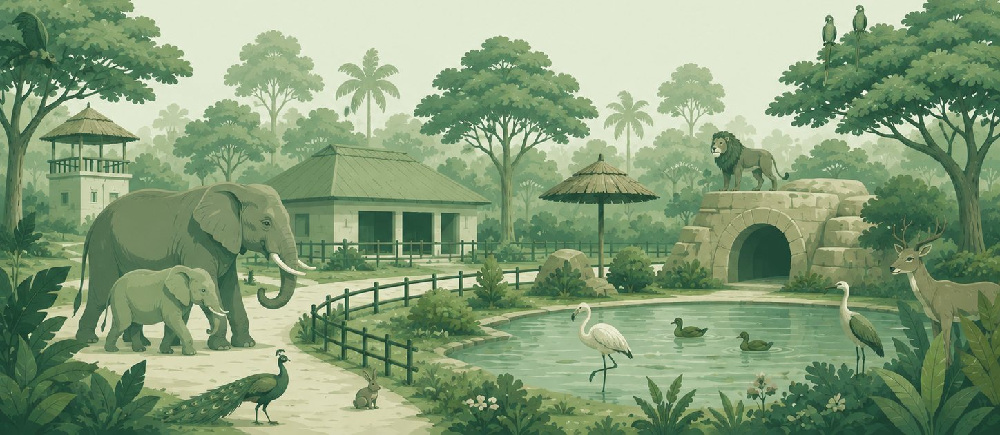
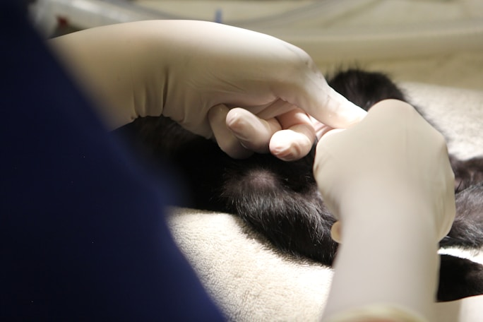
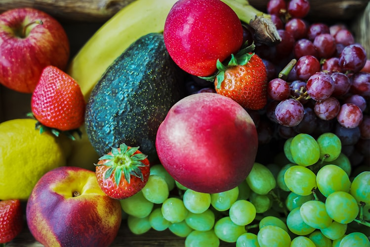

Good Morning,
Sourav Tambe 👋🏻

Antz Command Centre
Medical
Housing
Species Management

Hospital
Key Insights

Diet & Kitchen
Administer
Mortality
scroll 0 · p 0.00
The frame is 744 wide — the artboard. Scrolling it and scrubbing drive the same value, so what you scrub is exactly what a finger gets.